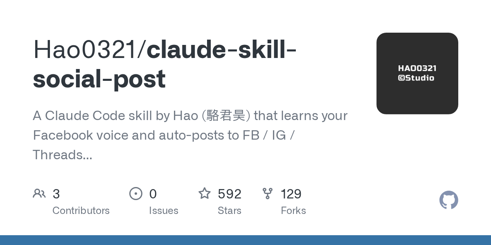

GitHub｜claude-skill-social-post：Claude/Codex 社群內容 Skill 與成效學習資料模型

一句話摘要
`claude-skill-social-post` 把社群發文拆成「學語氣、排內容、寫草稿／發布、記錄成效、優化規則」五個 Mode，讓 Claude Code 或 Codex 不只是寫貼文，也能把貼文表現變成可驗證、可累積的社群實驗資料。
為什麼保存
這個 repo 很適合放進 AI 學習雷達，因為它不是單純 prompt 範本，而是把 AI 社群營運做成可安裝、可驗證、可迭代的 skill：
- 把個人語氣、內容日曆與平台規則拆成明確檔案。
- 發布前保留人工確認，不把自動化變成失控代發。
- 用 JSONL 保存貼文與洞察快照，不只寫主觀心得。
- 把成效分析區分成假設、emerging、validated、deprecated，避免把單篇爆量誤判成規律。
對欒帥目前的 Hermes / AI 學習雷達 / LINE 分享歸檔工作流來說，這是一個很好的「skill 作為產品化工作流」參考樣本。
Repo 查核
GitHub API 查核時間：2026-08-12。
- Repo：`Hao0321/claude-skill-social-post`
- 作者：駱君昊（Hao）
- 語言：Python
- 授權：MIT
- Stars：約 592
- Forks：約 129
- 建立時間：2026-04-21
- Latest tag：`v2.0.0`
- 最近 push：2026-08-11
- Topics：`ai-agent`、`claude-code`、`claude-skill`、`content-calendar`、`facebook-automation`、`threads`、`viral-content` 等
README 描述它可安裝到 Codex 或 Claude Code，用於學習 Facebook 語氣、自動規劃內容、跨 FB / IG / Threads / X 發文，並記錄成效資料。
五個 Mode
`social-post/SKILL.md` 把工作流拆成五個 Mode：
| Mode | 用途 |
|---|---|
| P0 Plan | 規劃內容與實驗，例如排 14 天內容日曆。 |
| P1 Learn Voice | 學習使用者的 Facebook / 社群語氣。 |
| P2 Draft / Publish | 依平台寫貼文與發布，但發布前必須取得明確確認。 |
| P3 Log Outcome | 把 Reels / 貼文洞察保存成時間快照。 |
| P4 Optimize Patterns | 跨貼文、跨集比較，找出 pattern、confound 與規則升降級。 |
這個拆法很重要：規劃、撰稿、發布與成效學習不是同一件事。把它們分開，才能降低風險，也能讓資料逐步累積。
v2.0.0 的資料模型
README 特別提到 v2.0.0 新增三層資料模型：
- `posts.jsonl`：貼文、caption、發布條件。
- `insight_snapshots.jsonl`：不同時間點的洞察快照；不覆蓋舊數字。
- `experiments.jsonl`：跨篇假設、變因與 confound。
這個設計比「把截圖丟給 AI 叫它分析」更可靠，因為每次數字都以時間快照保存，後續可以比較 maturity、留存、觸及、互動與內容變因。
發布安全邊界
SKILL.md 明確寫到：只有 P2 的實際發布需要瀏覽器控制與已登入狀態；發布前必須在當前對話取得明確確認，並再次核對平台、帳號與正文。
它也限制：
- 不代為登入。
- 不改帳號或隱私。
- 不刪文。
- 不自動按讚、follow 或大量留言。
- 跨平台不是原文複製，而是依平台重新包裝。
這點對 agent 工具非常關鍵：越接近社群帳號與公開發佈，越需要 human-in-the-loop。
F19 部署包：Threads 破圈公式
Repo 內的 `F19_DEPLOYMENT_KIT.md` 是 Threads 破圈成長操作手冊，主張 F19 是「反賣課的立場宣言」公式，核心不是個人聲望，而是讀者願意轉發以表態的 tribal stance。
其中幾個值得保存的規則：
- Threads only，不建議搬去 FB。
- 一段式、不換行，60–150 字。
- 正文不放連結，外連會降低觸及。
- 抽象 stance 要綁具體 artifact，轉發才容易放大。
- 轉發、分享、瀏覽是不同深度的指標，不能混為一談。
這份部署包對觀察 Threads 演算法與社群內容公式很有參考價值，但也要注意：作者有標明其 proven 範圍是「溫熱話題波內可攜」，不是任何題材都能套用。
安裝摘要
README 安裝方式：
```bash
git clone https://github.com/Hao0321/claude-skill-social-post.git
```
macOS / Linux 可將 `social-post/` 複製到：
```text
~/.codex/skills/social-post/
```
或：
```text
~/.claude/skills/social-post/
```
接著建立本機檔案：
```bash
cp social-post/style_profile.example.md social-post/style_profile.md
cp social-post/content_plan.example.md social-post/content_plan.md
```
`style_profile.md`、`content_plan.md`、`drafts/`、`data/` 都是私人資料，不應提交到公開 fork。
對 Hermes 的啟發
這個 repo 對 Hermes 有幾個直接啟發：
- **Skill 不只是知識文件，也可以包含 scripts、schema 與驗證流程。**
- **社群成效要變成結構化資料，而不是只保存截圖。**
- **發布型 agent 必須內建確認、安全邊界與平台差異化。**
- **平台規則要標示時效，不應把短期演算法經驗當永久真理。**
- **AI 可以同時做內容助手與研究助手：寫貼文，也記錄結果、驗證假設。**
風險與限制
- 社群平台規則與演算法變動快，F19 或其他公式需要持續重新驗證。
- repo 內公開案例與公式不等於可直接複製到每個帳號或每個主題。
- 若要實際發布到 FB / IG / Threads / X，必須處理登入狀態、帳號確認、素材權限、隱私與平台規範。
- 用於成效學習時，單篇爆量不代表因果成立；需要用多篇、相似 maturity 與明確 confound 記錄來比較。